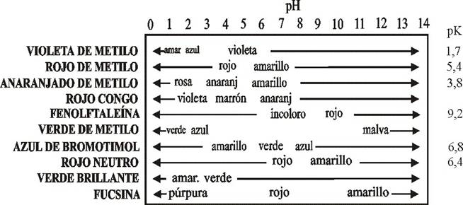
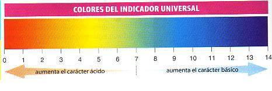

6.- IMPORTANCIA DE LAS REACCIONES QUÍMICAS
Estamos rodeados por reacciones químicas; tienen lugar en laboratorios, pero también en fábricas, automóviles, centrales térmicas, cocinas, atmósfera, interior de la Tierra... Incluso en nuestro cuerpo ocurren miles de reacciones químicas en cada instante, que determinan lo que hacemos y pensamos.
De toda la variedad de reacciones posibles, vamos a ver dos: las de neutralización y las de combustión. Pero antes de verlas, es necesario conocer y dominar el concepto de ácido y base.
6.1- Ácidos y bases
Las características de los ácidos y las bases se resumen en el siguiente cuadro:
| Ácidos | Bases | |
| ▪Tienen sabor agrio (ácido). | ▪Tienen sabor amargo. | |
| ▪Reaccionan con ciertos metales, como Zn, Mg o Fe, para dar hidrógeno | ▪Reaccionan con las grasas para dar jabones. | |
| ▪Reaccionan con las bases para dar sales | ▪Reaccionan con los ácidos para dar sales. | |
| Son sustancias ácidas: el ácido clorhídrico (HCl); el ácido bromhídrico (HBr); el ácido nítrico (HNO3); el ácido carbónico (H2CO3) y el ácido sulfúrico (H2SO4), entre otros | Son sustancias básicas el hidróxido de amonio o amoniaco disuelto en agua (NH4OH); y los hidróxidos de los metales alcalinos (LiOH, NaOH, KOH,...) y alcalinotérreos, como el Ca(OH)2, y Mg(OH)2, entre otros |
Para distinguir si una sustancia es ácida o básica, se utiliza la escala de pH, comprendida entre el 1 y el 14:
En los laboratorios y aquellos otros lugares donde es necesario determinan esta propiedad (como en un análisis de agua potable, por ejemplo), se utiliza un indicador ácido-base, que es una sustancia que presenta un color distinto según sea el pH del medio. Algunos ejemplos se muestran en las dos tablas siguientes:
| Indicadores | Color en medio ácido | Color en medio básico |  |
| Naranja de metilo | Naranja | Amarillo | |
| Fenolftaleina | Incoloro | Rosa | |
| Azul de bromotimol | Amarillo | Azul | |
| Tornasol | Rojo | Azul |
Para ahorrar tiempo y trabajo, se utiliza mucho el papel indicador universal, que es un papel impregnado con una mezcla de indicadores y que adquiere un color distinto según los distintos pH.

Neutralización
Cuando entran en reacción un ácido (por ejemplo, HCl) y una base (NaOH), el primero se disocia liberando H+ y Cl-, mientras que el segundo se disocia en Na+ y OH-. Los iones Cl- y Na+ se unen formando una nueva sustancia neutra (en este caso NaCl), llamada sal y los iones H+ y OH- se unen por su parte para forman H2O, es decir, agua.
|
acido + base → sal + agua |
La combustión
La combustión es el proceso químico por el cual una sustancia, llamada combustible, reacciona con el oxígeno. En general, esta reacción es fuertemente exotérmica, desprendiéndose energía en forma de calor, luz o sonido.
Esta reacción no tiene lugar de forma espontánea, sino que, para que comience, ha de aportarse energía a través de una llama o de una chispa eléctrica. Eso si, una vez empezada, continúa por sí sola hasta que se agote el combustible o el oxígeno.
Es una reacción de gran importancia, tanto en la naturaleza como para la actividad humana, ya que es la forma en que los seres vivos y los artefactos humanos obtienen de forma muy mayoritaria su energía. Reacciones de combustión particularmente importantes son:
La combustión del carbono. Su ecuación química es la siguiente: C(s) + O2(g) → CO2(g). El producto es dióxido de carbono y se desprende energía lumínica y calorífica. Cuando esta reacción tiene lugar con poco oxígeno, la reacción es entonces: C(s) + ½O2(g) → CO(g), formándose monóxido de carbono, un gas venenoso y muy peligroso.
La combustión de hidrocarburos (compuestos cuya base es carbono e hidrógeno). En esta reacción se forma CO2 y vapor de agua. Es la reacción que tiene lugar en la combustión de los combustibles fósiles (carbón y petróleo), fuente básica de obtención de energía en nuestra sociedad. Un ejemplo de esta reacción es la combustión del metano:
| CH4(g) + 2O2(g) → CO2 (g) + 2 H2O (g) |
Un punto importante a destacar, es que los productos de la combustión, fundamentalmente el dióxido de carbono, tienen una gran incidencia cuando son liberados al medio ambiente, ya que este gas es el que produce mayor efecto invernadero.